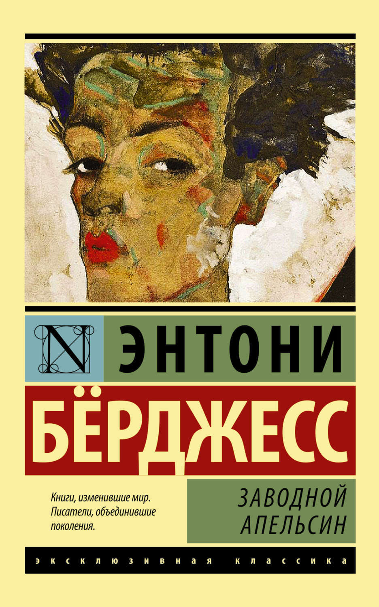
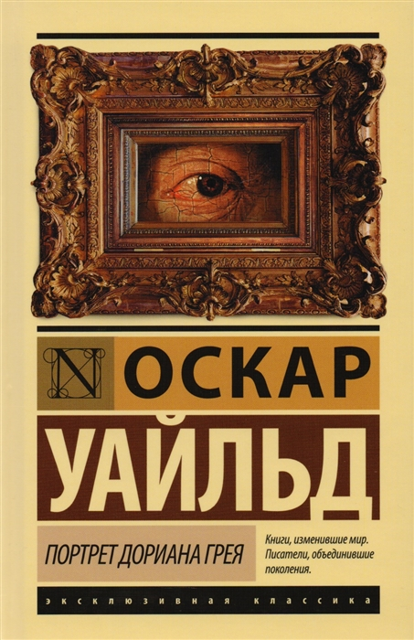
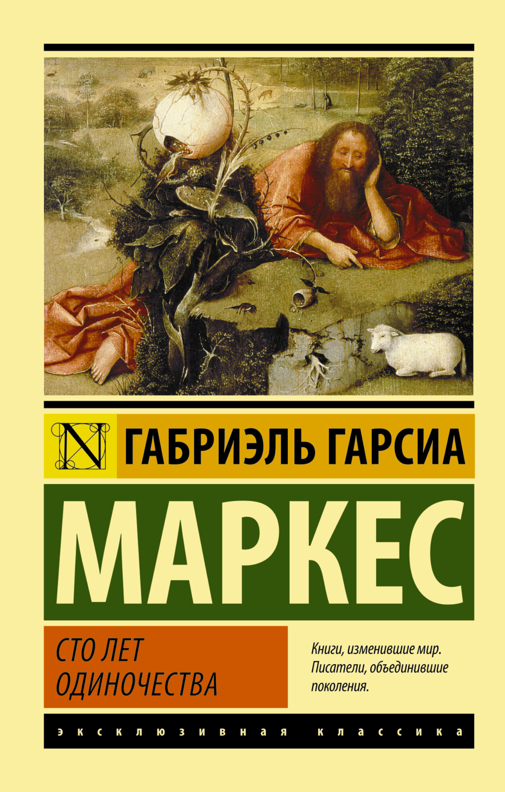
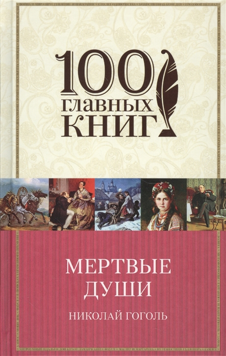
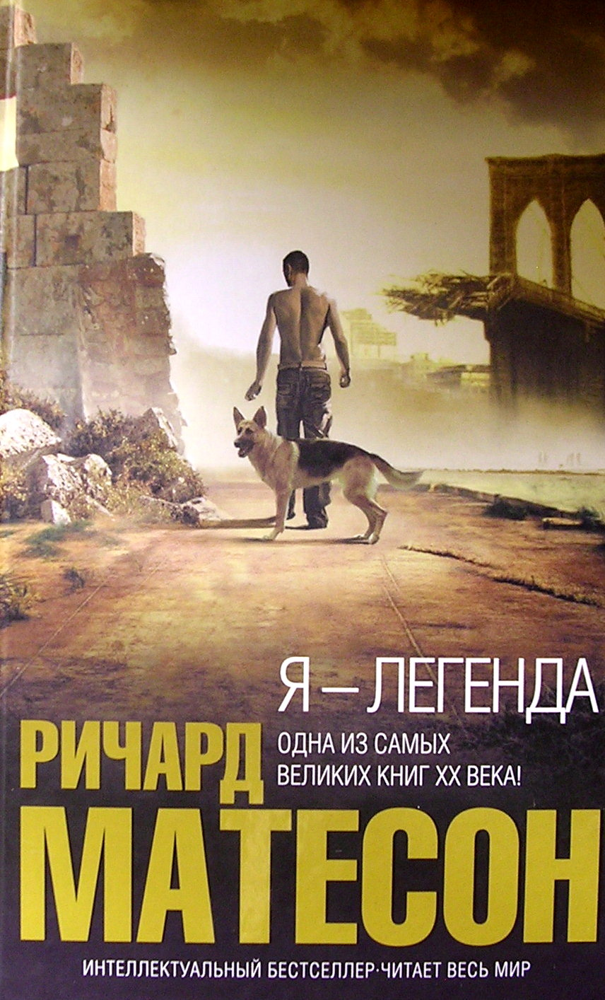
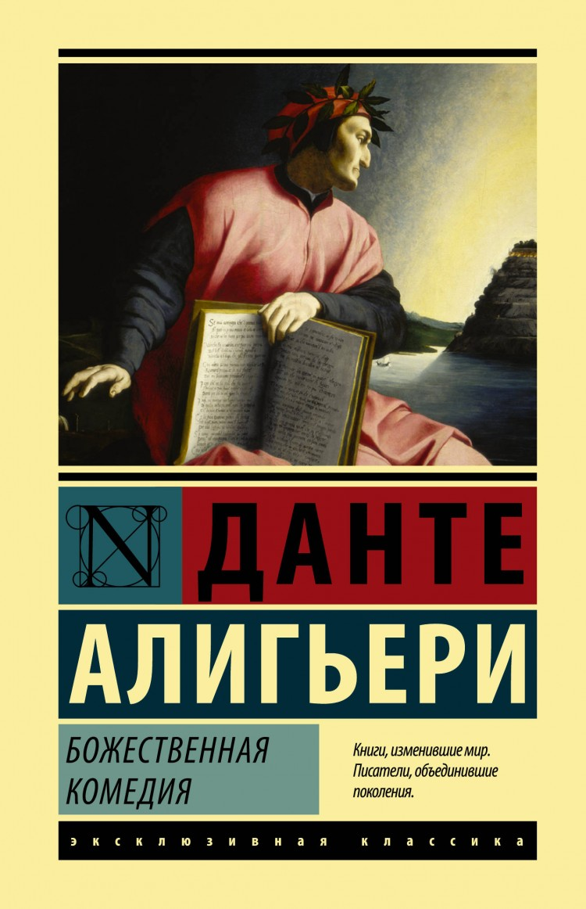
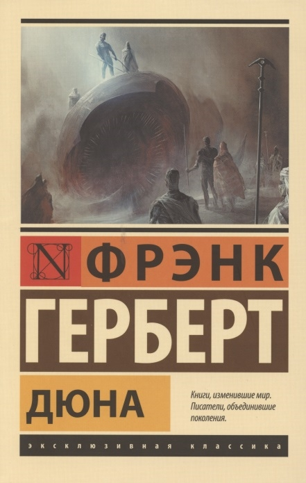
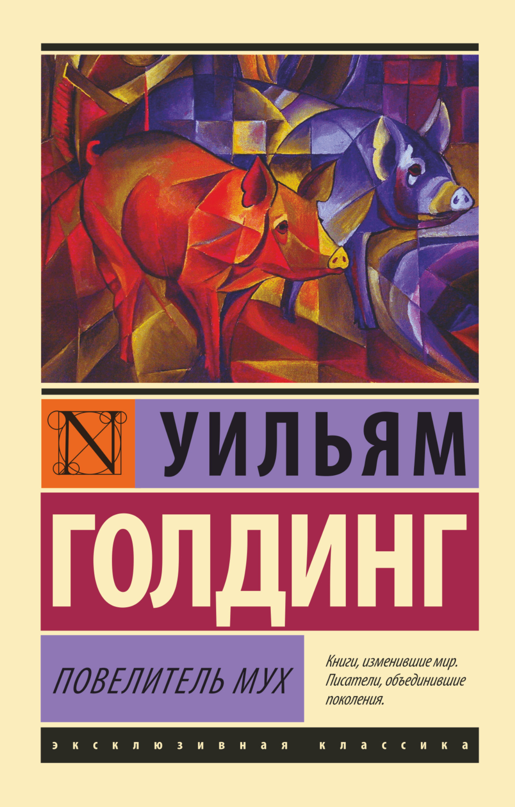

451 градус по Фаренгейту

«451 градус по Фаренгейту» — научно-фантастический роман-антиутопия Рэя Брэдбери, изданный в 1953 году. Роман описывает американское общество близкого будущего, в котором книги находятся под запретом; «пожарные», к числу которых принадлежит и главный герой Гай Монтэг, сжигают любые найденные книги
1984

Роман «1984» наряду с такими произведениями, как «Мы» Евгения Замятина (1920), «О дивный новый мир» Олдоса Хаксли (1932) и «451 градус по Фаренгейту» Рэя Брэдбери (1953) считается одним из образцов антиутопии
Заводной апельсин
«Заводно́й апельси́н» роман Энтони Бёрджесса, написанный в 1962 году. Роман лёг в основу одноимённого фильма, снятого в 1971 году Стэнли Кубриком.
Портрет Дориана Грея
«Портре́т Дориа́на Гре́я» — единственный опубликованный роман Оскара Уайльда. В жанровом отношении представляет смесь романа воспитания с моральной притчей. Существует в двух версиях — в 14 главах (июль 1890 года) и в 20 главах (апрель 1891 года), — в новое отдельное издание были добавлены главы III, V, XV—XVIII. Стал самым успешным произведением Уайльда, экранизировался в разных странах мира более 30 раз.
Сто лет одиночества
«Сто лет одиночества» — роман колумбийского писателя Габриэля Гарсиа Маркеса, одно из наиболее характерных и популярных произведений в направлении магического реализма. Первое издание романа было опубликовано в Буэнос-Айресе в июне 1967 года тиражом 8000 (сначала 3000 — потом 5000) экземпляров. Роман был удостоен премии Ромуло Гальегоса. На сегодняшний день продано более 30 миллионов экземпляров, роман переведён на 35 языков мира
Мёртвые души
«Мёртвые ду́ши» — произведение Николая Васильевича Гоголя, жанр которого сам автор обозначил как поэма. Изначально задумано как трёхтомник. Первый том был издан в 1842 году. Практически готовый второй том был утерян, но сохранилось несколько глав в черновиках. Третий том не был начат, о нём остались только отдельные сведения.
Я — легенда
«Я — легенда» — научно-фантастический роман американского писателя Ричарда Мэтисона, оказавший большое влияние на формирование в современной литературе образа вампиров, зомби, популяризации концепции всемирного апокалипсиса по причине пандемии и идеи описания вампиризма как заболевания. Роман, опубликованный в 1954 году, был достаточно успешен. По его мотивам сняты фильмы «Последний человек на Земле» (1964), «Человек Омега» (1971) и «Я — легенда» (2007). Кроме того, существует неофициальная экранизация — фильм «Я — воин» (2007)
Божественная комедия
«Боже́ственная коме́дия» — поэма, написанная Данте Алигьери в период приблизительно с 1308 по 1321 год и дающая наиболее широкий синтез средневековой культуры и онтологию мира. Настоящая средневековая энциклопедия научных, политических, философских, моральных, богословских знаний. Признаётся величайшим памятником итальянской и мировой культуры.
Дюна
«Дюны» происходит в галактике далёкого будущего под властью межзвёздной империи, в которой феодальные семейства владеют целыми планетами. «Дюна» рассказывает историю молодого аристократа по имени Пол Атрейдес, чья семья получает в управление планету Арракис. В пустынях Арракиса добывают особое вещество — «пряность», необходимое для космических перелётов. После военного переворота Пол вынужден скрываться среди жителей пустынь — фременов — и в итоге поднимает их на священную войну против империи.
Повелитель мух
«Повели́тель мух» — дебютный аллегорический роман английского писателя, лауреата Нобелевской премии по литературе (1983), Уильяма Голдинга, вышедший в 1954 году.